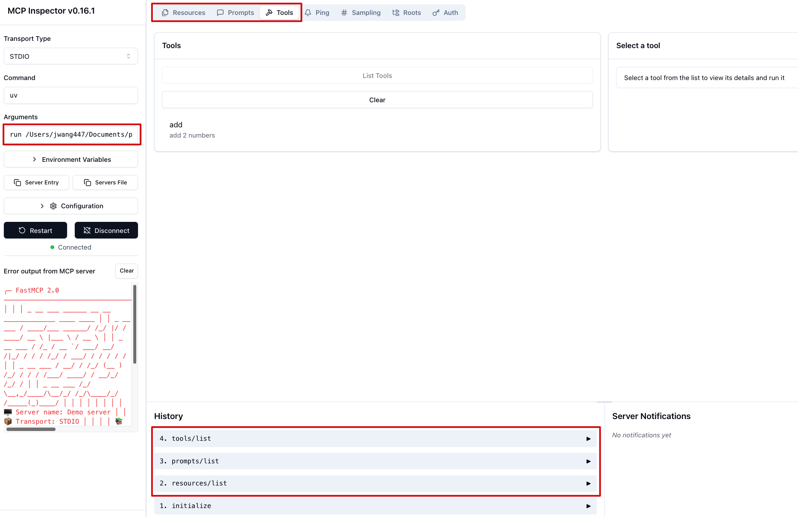

MCP Client & Server Examples - Quick Reference
mcp
python
AI
Quick reference for basic MCP client and server implementation. Based on the official tutorial https://modelcontextprotocol.io/quickstart/client - keeping it here for easy access.
Dependencies
Required Python packages:
pip install fastmcp openai python-dotenvOr with uv:
uv add fastmcp openai python-dotenvSimple MCP Server
Basic server using FastMCP with a tool, prompt, and resource:
NoteShow MCP Server Code
sample_mcp_server.py
from fastmcp import FastMCP
mcp = FastMCP("Demo server")
@mcp.tool
def add(a: int, b: int) -> int:
"""add 2 numbers"""
return a + b
@mcp.prompt
def tell_a_joke() -> str:
"""Tell me a programming joke"""
return "Please tell me a funny programming joke that would make a developer laugh!"
@mcp.resource("data://config")
def get_config() -> dict[str, str | list[str]]:
"""Provides application configuration as JSON."""
return {
"theme": "dark",
"version": "1.2.0",
"features": ["tools", "resources"],
}
if __name__ == "__main__":
mcp.run()MCP Client with Azure OpenAI
Client that connects to the server and integrates with Azure OpenAI:
NoteShow MCP Client Code
sample_mcp_client.py
import asyncio
from contextlib import AsyncExitStack
import json
import os
from mcp import ClientSession, StdioServerParameters
from mcp.client.stdio import stdio_client
from openai import AzureOpenAI
from dotenv import load_dotenv
load_dotenv()
class MCPClient:
def __init__(self):
self.session: ClientSession | None = None
self.exit_stack = AsyncExitStack()
self.azure_client = AzureOpenAI(
api_key=os.getenv("AZURE_OPENAI_API_KEY"),
api_version=os.getenv("AZURE_OPENAI_API_VERSION", "2024-10-21"),
azure_endpoint=os.getenv("AZURE_OPENAI_ENDPOINT")
)
self.deployment_name = os.getenv("AZURE_OPENAI_DEPLOYMENT_NAME")
async def connect_to_server(self, server_script_path: str) -> None:
"""Connect to an MCP server"""
is_python = server_script_path.endswith('.py')
command = "python" if is_python else "node"
server_params = StdioServerParameters(
command=command,
args=[server_script_path],
env=None
)
stdio_transport = await self.exit_stack.enter_async_context(stdio_client(server_params))
self.stdio, self.write = stdio_transport
self.session = await self.exit_stack.enter_async_context(ClientSession(self.stdio, self.write))
await self.session.initialize()
response = await self.session.list_tools()
tools = response.tools
print("Connected to server with tools:", [tool.name for tool in tools])
async def process_query(self, query: str) -> str:
"""Process a query using Azure OpenAI and available tools"""
messages = [{"role": "user", "content": query}]
response = await self.session.list_tools()
available_tools = [{
"type": "function",
"function": {
"name": tool.name,
"description": tool.description,
"parameters": tool.inputSchema
}
} for tool in response.tools]
response = self.azure_client.chat.completions.create(
model=self.deployment_name,
messages=messages,
tools=available_tools,
tool_choice="auto"
)
final_text = []
assistant_message = response.choices[0].message
if assistant_message.content:
final_text.append(assistant_message.content)
messages.append({
"role": "assistant",
"content": assistant_message.content,
"tool_calls": assistant_message.tool_calls
})
if assistant_message.tool_calls:
for tool_call in assistant_message.tool_calls:
tool_name = tool_call.function.name
tool_args = json.loads(tool_call.function.arguments)
result = await self.session.call_tool(tool_name, tool_args)
final_text.append(f"[Calling tool {tool_name} with args {tool_args}]")
messages.append({
"role": "tool",
"tool_call_id": tool_call.id,
"content": str(result.content)
})
response = self.azure_client.chat.completions.create(
model=self.deployment_name,
messages=messages,
tools=available_tools,
tool_choice="auto"
)
if response.choices[0].message.content:
final_text.append(response.choices[0].message.content)
return "\n".join(final_text)
async def chat_loop(self) -> None:
"""Run an interactive chat loop"""
print("MCP Client Started! Type 'quit' to exit.")
while True:
try:
query = input("\nQuery: ").strip()
if query.lower() == 'quit':
break
response = await self.process_query(query)
print(f"\n{response}")
except Exception as e:
print(f"Error: {str(e)}")
async def cleanup(self) -> None:
"""Clean up resources"""
await self.exit_stack.aclose()
async def main() -> None:
if len(sys.argv) < 2:
print("Usage: python client.py <path_to_server_script>")
sys.exit(1)
client = MCPClient()
try:
await client.connect_to_server(sys.argv[1])
await client.chat_loop()
finally:
await client.cleanup()
if __name__ == "__main__":
import sys
asyncio.run(main())Usage
Run the client with your server:
uv run sample_mcp_client.py sample_mcp_server.pyHow It Works
Server provides:
- Tools - Functions AI can call (
add) - Prompts - Message templates (
tell_a_joke)
- Resources - Static data (
config)
Client handles:
- Server connection via stdio
- Tool discovery and formatting
- Conversation flow between user, Azure OpenAI, and tools
Development
Inspect your server with FastMCP’s dev mode:
fastmcp dev sample_mcp_server.pyThis gives you a web interface to test tools and explore server capabilities.
